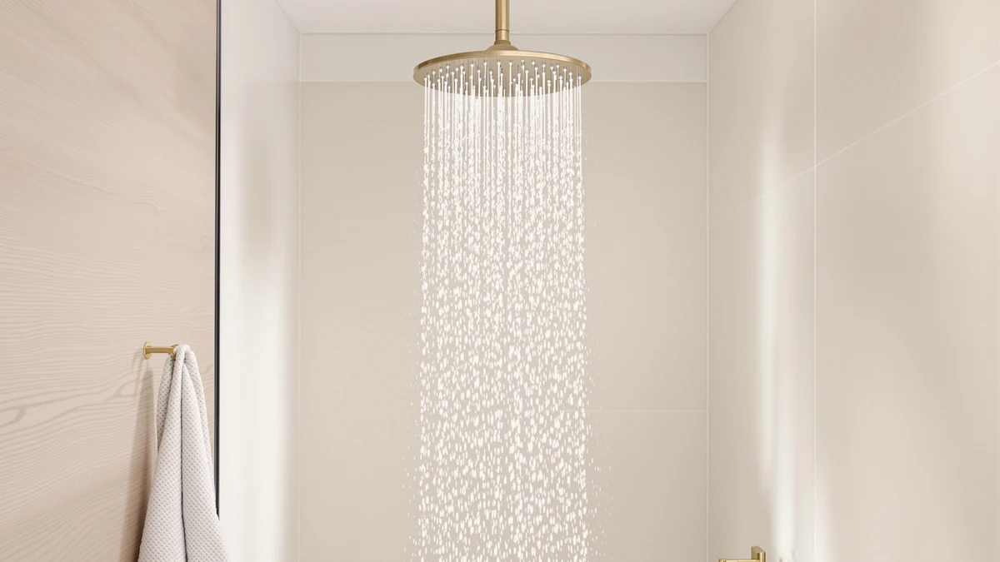

How to Clean Shower Heads with Vinegar and Baking Soda: Complete Guide (2026)
Prices and picks verified as of October 2026. Independent, reader-supported reviews.


Things to Know Before You Buy
- Vinegar does the real dissolving work. Its acetic acid breaks down the calcium deposits clogging your nozzles, while baking soda adds a mild fizzing scrub that lifts loosened grime instead of letting it resettle.
- You don't have to unscrew the shower head to clean it. A vinegar and baking soda mix poured into a sealable bag, secured around the nozzle plate, works on fixed heads and handheld models alike.
- Leave the bag vented rather than airtight. The reaction between vinegar and baking soda releases carbon dioxide, and a sealed bag can swell and leak if the gas has nowhere to escape.
- Finish matters. Chrome and plastic tolerate a long soak, but brushed nickel and oil-rubbed bronze can dull or discolor if the mixture sits on them for more than about 30 minutes.
- If one soak doesn't fully clear the spray, repeat it instead of switching to a stronger descaler. Caked-on hard water buildup often needs two or three rounds before every nozzle opens back up.
How to clean shower heads with vinegar and baking soda comes down to one basic reaction: vinegar's acid dissolves the calcium and lime deposits clogging your nozzles, and baking soda's fizzing action helps lift what the acid loosens instead of leaving it to cake back on. If your spray has turned weak, uneven, or ringed with white crust, hard water minerals are almost certainly the cause, and you don't need a plumber or a replacement fixture to fix it.
This guide walks through the version of the method that works when plain vinegar alone isn't cutting through heavier buildup: a vinegar soak paired with a baking soda paste for scrubbing stubborn spots. Five steps, about an hour of mostly hands-off time, and a cost of a few dollars for supplies you likely already keep under the sink. Along the way, we'll flag the mistakes that stall the process, like sealing the soak bag too tightly or scrubbing with something that scratches the finish.
What You'll Need
- Supplies: white vinegar, baking soda, and water
- Tools: a resealable plastic bag or small bowl, and an old toothbrush
Step 1: Remove the shower head or bag it in place
Look at how your shower head attaches before you start. Most fixed heads unscrew counterclockwise by hand, and a strip of cloth wrapped around the connection gives you enough grip without marking the finish if it's stuck. Handheld heads usually detach from the hose with a quarter turn, which makes a full bowl soak easier later in the process.
If the head won't budge, or you'd rather skip the plumbing step entirely, leave it attached and use the bag method instead. Fill a quart-size resealable bag with your vinegar and baking soda mixture, slide it up over the shower head so the nozzle plate sits inside the liquid, and secure the open end around the neck of the fixture with a rubber band. Either approach works for cleaning shower heads with vinegar and baking soda, so pick whichever fits the fixture you have.
Step 2: Mix the vinegar and baking soda solution
Pour about one to two cups of white vinegar into your bowl or bag, then stir in two to three tablespoons of baking soda. The mixture will fizz for a minute or two as the acid in the vinegar reacts with the baking soda, and that reaction is exactly what helps loosen crusted mineral deposits before the longer soak even begins.
Keep the container loosely covered rather than sealed airtight. The fizzing reaction produces carbon dioxide, and a fully sealed bag or jar can build up enough pressure to pop open or leak at the seams. If you're using baking soda to scrub rather than soak, set aside a separate small amount mixed with a splash of water to form a paste for step four.
Step 3: Soak the shower head for 30 to 60 minutes
Make sure the nozzle plate stays fully submerged for the entire soak, propping the bowl against the shower wall or double-checking the bag is snug around the fixture so it doesn't slip. Thirty minutes handles routine maintenance cleaning, while a fixture that hasn't been cleaned in six months or longer usually needs the full hour to loosen heavier scale.
Chrome and plastic shower heads can tolerate a longer soak if the first hour doesn't fully clear things up, but check the finish before you walk away for an extended soak. Brushed nickel, matte black, and oil-rubbed bronze finishes can dull or discolor with prolonged acid contact, so stick closer to 30 minutes on those and plan to repeat the soak another day instead of extending this one.
Step 4: Scrub the nozzles with a baking soda paste
After the soak, the mineral crust around each nozzle should look lighter and feel softer than before. Dip an old toothbrush into the baking soda paste you set aside, or straight into the used soak liquid, and scrub each hole in small circles. The mild abrasiveness of baking soda helps lift what the vinegar has already loosened without scratching chrome or plastic surfaces.
For holes that are still clogged, a plastic toothpick nudges out the last of the hardened buildup better than anything metal. Work the tip into the opening instead of scraping across the surface, since a metal pin or paperclip can widen the hole or scratch a finished surface. Rubber self-cleaning nozzles respond better to a gentle finger rub than a brush, since bristles can snag and tear the flexible material.
Step 5: Rinse, reattach, and test the spray
Run the shower head under warm tap water for a minute or two, pointing the nozzles down so flakes of loosened mineral wash out rather than settling back into the holes. If you removed the fixture earlier, reattach it now and turn it by hand until it's snug, checking that the connection doesn't leak once the water is running.
Turn the shower on and watch the spray pattern for a few seconds. Every nozzle should produce a consistent jet with no weak spots or stray angles. If a handful of holes are still sluggish, repeat the vinegar and baking soda soak rather than reaching for a wire brush, which scratches finishes and can permanently widen the nozzle openings.
Common Mistakes to Avoid
The most common misstep with this method is sealing the soak bag completely airtight. The vinegar and baking soda reaction keeps producing carbon dioxide for several minutes, and a bag with no way to vent that gas can swell, leak at the seams, or pop off the fixture and spill onto the shower floor. Leave the bag loosely closed instead.
A close second is scrubbing with something too abrasive. Steel wool and metal wire brushes cut through mineral deposits fast, but they also scratch chrome, strip matte black coatings, and widen nozzle openings in ways that change the spray pattern permanently. An old toothbrush and a plastic toothpick handle the job without damaging the finish.
Skipping the soak time is another shortcut that backfires. Baking soda's mild abrasion helps, but it doesn't replace the chemical work vinegar does over 30 to 60 minutes. Scrubbing a nozzle plate that hasn't soaked long enough pushes hardened deposits around instead of clearing them.
Finally, don't leave an acidic soak on a brushed nickel or oil-rubbed bronze finish overnight hoping for a deeper clean. Extended contact dulls and discolors these finishes well before it offers any extra cleaning benefit. If buildup is severe enough that a single soak won't clear it, repeat the vinegar and baking soda process over a few days instead of extending one soak past an hour.
Our Top Picks
If your shower head is too far gone for another soak, or the internal channels have calcified beyond what scrubbing can reach, these three models consistently turn up with strong reviews for resisting the kind of buildup that sends you back to the vinegar and baking soda mix every few weeks.

Editor's Pick
NPYSVSSS Dual Shower Heads System
This dual shower head system pairs a rain head with a handheld wand on a single valve, so you can rinse mineral deposits out of corners a fixed head alone would miss. Owners researching replacements for scale-damaged fixtures report that having two spray components means you're rarely stuck waiting on one soak to restore full pressure everywhere at once.
$889.99
Check Price on Amazon
Best Value
Shower Head High Pressure Filtered
At under $20, this filtered shower head costs little enough to replace outright once a worn-out fixture stops responding to cleaning. Reviewers consistently note that the built-in filter cuts down on the sediment and scale that cause clogging in the first place, which means fewer vinegar and baking soda soaks down the road.
$19.99
Check Price on Amazon
Premium Choice
Aolemi Shower System with Rain
Aolemi's rain shower system adds a full overhead panel to a handheld sprayer, and owners report the wider nozzle openings on the rain panel are noticeably easier to keep clear than the tiny holes on a standard single shower head. It's worth considering if your current fixture needs scrubbing every few weeks to keep up.
$139.99
Check Price on AmazonFrequently Asked Questions
Most shower heads need 30 to 60 minutes in the mixture to loosen moderate buildup. A fixture that hasn't been cleaned in six months or longer may need the full hour, and heavily calcified heads can take two or three repeated soaks rather than one extended one, especially on finishes like brushed nickel that shouldn't sit in acid too long.
Vinegar does most of the actual dissolving since its acetic acid is what breaks down calcium deposits. Baking soda adds a mild fizzing action that helps lift loosened grime and gives you a gentle paste for scrubbing, which makes a real difference once buildup has caked on hard enough that a vinegar soak alone leaves a film behind.
Keep the bag loosely closed rather than fully sealed. The reaction between the two ingredients releases carbon dioxide, and a fully airtight bag can swell and leak or pop off the fixture under the buildup of gas.
Chrome and plastic tolerate the soak well even over an hour. Brushed nickel, matte black, and oil-rubbed bronze are more sensitive, and leaving the mixture on those finishes for much longer than 30 minutes can dull the coating or cause discoloration over repeated cleanings.
Clean it every one to three months if you have hard water, and every four to six months with soft water. Staying on that schedule keeps mineral deposits from calcifying to the point where a single soak can't clear them.
Verdict
How to clean shower heads with vinegar and baking soda breaks down into five steps that cost about five dollars and take roughly an hour, most of it hands-off soak time. Remove the head or bag it in place, mix the solution, let it sit for 30 to 60 minutes, scrub the nozzles with a baking soda paste, then rinse and test the spray. The method works across nearly every finish as long as you watch the soak time on brushed nickel and oil-rubbed bronze, and repeating it every one to three months in a hard-water home keeps deposits from calcifying again.
If the spray is still weak after two or three rounds, the buildup has likely moved past what scrubbing can reach, and that's the point where a replacement makes more sense than continued soaking. Among the options above, the NPYSVSSS dual system stands out for anyone replacing a fixture that's past saving, since splitting the spray across a rain head and a handheld wand means scale rarely clogs both at once.